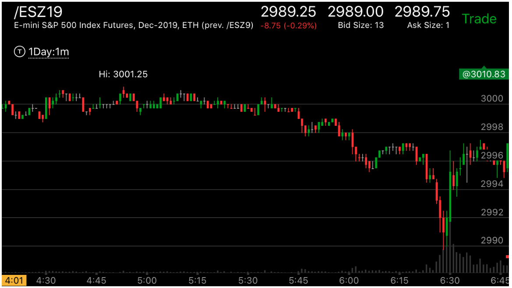

刚刚开盘后，现货和期货市场差别很大的情况
两者本来应该一模一样，有时候，在刚刚开盘的几分钟，现货市场会出现特别的情况，和期货市场 同一时间差别很大。这并不表示现货市场会错误，而是表示现货市场有特别的信号发出。这个信号会更加精确， 可以对当天的市场做出更加精确的预测。

图示：看6：30，期货市场在上涨，而现货市场在下跌。它缓慢下跌，预示着现货市场第一段 上涨的幅度，然后出现了两段上涨走势。因为大盘仍然处于跌势。这样，大盘就反转了。然后大跌。